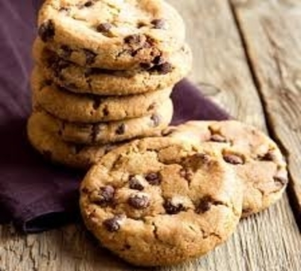
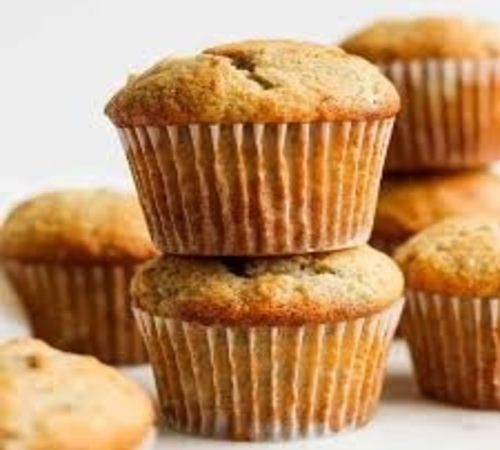
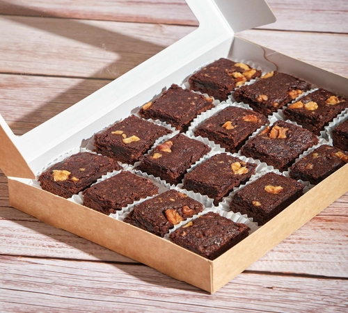
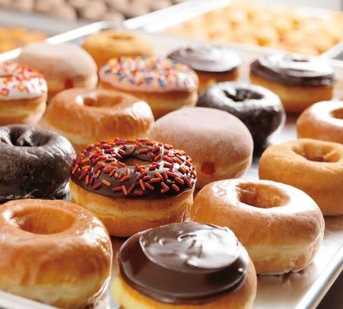
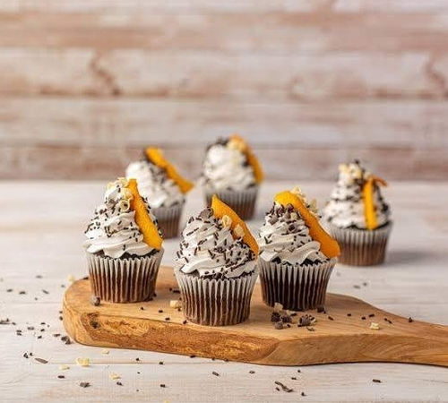

BREAD

Click the image to show more details.
CAKE
Cake is a sweet baked dessert typically made from a mixture of flour, sugar, eggs, and butter or oil. It often includes flavorings such as vanilla, chocolate, or fruit and is usually frosted or decorated.
COOKIES
A cookies or biscuit is a baked snack or dessert that is typically small, flat, and sweet.
MUFFINS
Muffins They tend to be sweet and somewhat moist, but heavier than a cake or cupcake. Muffins are baked in a pan with cup-sized indentations. The word was originally moofin, which may come from the Low German muffe, "small cake," or the Old French moflet, "soft or tender."
PIES
A Pie is any dish enclosed in a pastry crust, typically baked in a shallow, round pan called a pie dish. Pies are usually made with sweet fillings, like fruit or custard.
BROWNIES
Brownies are a popular baked dessert that is rich, dense, and typically chocolate-flavored. They fall somewhere between a cake and a cookie in texture, often fudgy or chewy, with a slightly crispy top. Brownies can be enjoyed plain or with added ingredients like nuts, chocolate chips, or frosting, Usually baked in a square or rectangular pan and cut into squares or rectangles for serving.
DOUGHNUTS
Doughnuts are a kind of ring-shaped snack food popular in many countries, which are usually deep fried from flour doughs. After being fried, doughnuts can be spread with chocolate or icing on top, covered with powdered sugar or fruit, or glazed with sugar icing.
CUPCAKES
Cupcakes are small, sweet, single-serving cakes that are baked in a cup and topped with frosting or other decorations. They are often made with flour, sugar, eggs, and fat, and come in a variety of flavors, such as chocolate, vanilla, red velvet, and lemon raspberry.